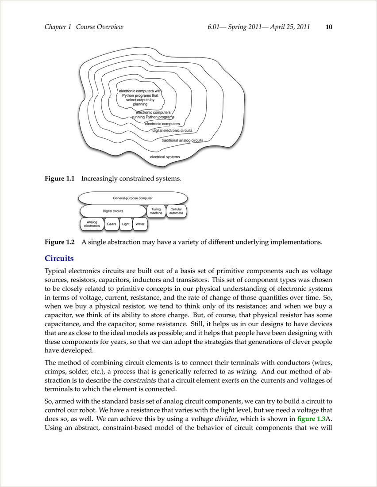

I picked up a 4.3-inch pocket e-ink reader and immediately hit the catch: PDFs don't reflow. A 320-page textbook laid out for US Letter, squeezed onto a 480-pixel-wide screen, is a pinch-zoom nightmare. The fix is to convert the PDF into a reflowable EPUB — text that rewraps to the screen, with resizable fonts. Here's the whole recipe, short enough to follow in an afternoon.
Why a pocket e-ink reader
The device is an Xteink X4 — part of a wave of tiny, cheap e-readers that have caught on for one reason: they make reading frictionless. E-ink is easy on the eyes and readable in sunlight, there's no backlight glare and nothing to notify you, the battery lasts roughly two weeks, and it's small enough to live in a pocket. The X4 even ships with magnetic rings so it sticks to the back of your phone. At around $55 it's an impulse buy, which is most of why these little readers are having a moment.
The trade-off: a small, grayscale, non-touch screen. So the conversion has to optimize for exactly that — small images, grayscale, reflow, big-enough text.
Before & after
Same chapter, two formats. On the left, the original PDF page — fixed US-Letter layout, a running header (6.01 — Spring 2011 …), and a page number. On the right, the produced EPUB on the X4: the page furniture is gone, the text reflows to the narrow screen, the equation is real (resizable) math, and you turn pages with a button.

1.3 Voltage dividers
We can use the abstraction of a voltage divider to find the voltage across a component. For two resistors in series,
The output voltage is the input scaled by the ratio of the resistances — the building block for the rest of the chapter.
(The right-hand panel is a live mockup using the actual text and the real MathML equation from the generated EPUB.)
Convert your own PDF
Five steps. The hard part — turning a fixed PDF into structured text with the equations and figures intact — is done by Marker, a machine-learning document parser. pandoc builds the EPUB; epubcheck checks it.
-
Install the tools
Marker needs Python 3.12+ (older wheels hit a loader bug on current macOS). pandoc and epubcheck come from Homebrew.
brew install pandoc epubcheck python3.12 -m venv .venv && source .venv/bin/activate pip install marker-pdf pillow -
Extract the PDF to Markdown
Marker detects layout, reading order, tables, figures, and equations, and writes Markdown plus an image per figure. On an Apple-Silicon GPU set
TORCH_DEVICE=mps. (It's not fast — a 320-page book took ~90 minutes.)marker_single book.pdf --output_dir out --output_format markdown -
Clean up the Markdown
The raw output needs light repair: strip running headers and page numbers, fix heading levels, reattach "Figure N" captions to their images, and tidy equations. A ~150-line Python script handles it (see
02_clean.pyin the repo) — the patterns are book-specific but small. -
Build the EPUB
pandoc makes a reflowable EPUB3, turns LaTeX math into MathML (scales with the font instead of being a fixed image), builds the TOC, and splits chapters. Disabling raw HTML keeps stray OCR tags from breaking the file.
pandoc clean.md \ --from=markdown-raw_html+tex_math_dollars+superscript+subscript \ --to=epub3 --mathml --toc --toc-depth=3 --split-level=1 \ --css=epub.css --epub-cover-image=cover.png \ -o book.epub -
Validate & load it
Confirm it's a clean EPUB, then copy it to the reader over USB-C.
epubcheck book.epub # 0 errors / 0 warnings = ship it
What to watch for
- Use Python 3.12+. The 3.10 wheels for Marker's dependencies fail to load on current macOS (a
dyld/ SciPy error). A fresh 3.12 venv fixes it. - Trust, but verify the OCR. On this book the model read the Signals chapter's R (delay) operator as
\Re(real-part ℜ) 322 times. A one-line find-replace fixed every equation — but only because I read the text and confirmed the book never means "real part." - Equations are MathML. Great readers render it beautifully; weak ones ignore it. If your device can't, regenerate with equations as small images instead.
- Grayscale & shrink images. The screen is grayscale and ~480px wide; convert figures to gray and cap the long edge (~760px) to keep the file small and sharp.
- Hosting on GitHub Pages? Add a
.nojekyllfile, or any asset whose name starts with_silently 404s.
The full pipeline — scripts, the e-ink CSS, and a quality report — is on GitHub. Point it at any PDF and run one command.